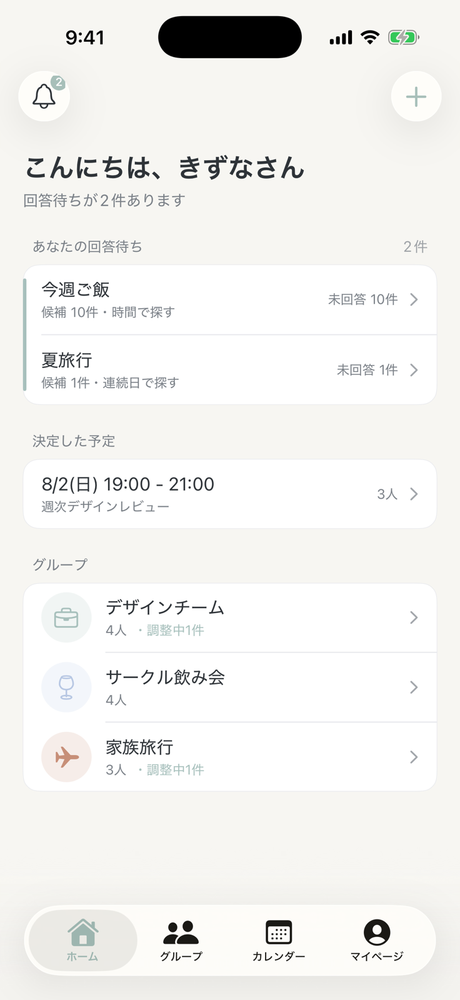
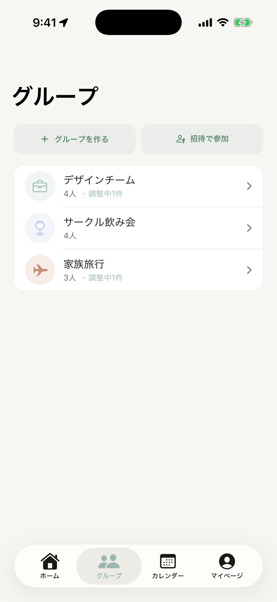
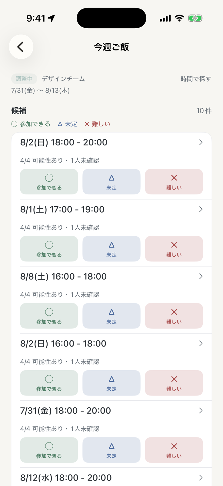

Yohaku
ヨハク
SHARED AVAILABILITY · 予定
予定の中身は見せず、空き時間だけを使って友達やグループの日程を決める調整アプリです。



端末カレンダーから忙しい時間だけを算出し、詳細は共有しません。
リンクからメンバーを招き、候補日時を自動で作れます。
候補ごとにOK、Maybe、NGを選んで予定を絞り込みます。
決まった予定をAppleカレンダーへ追加できます。
Made for you